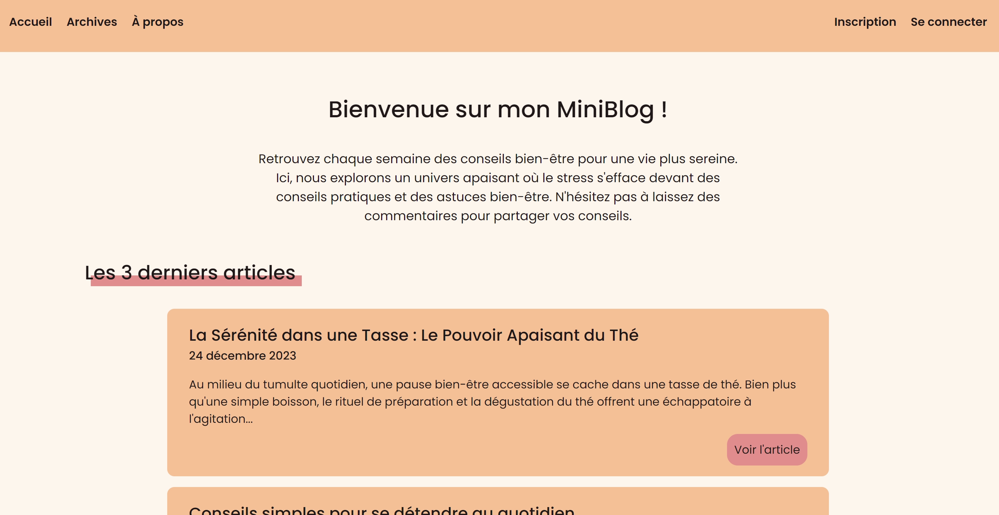
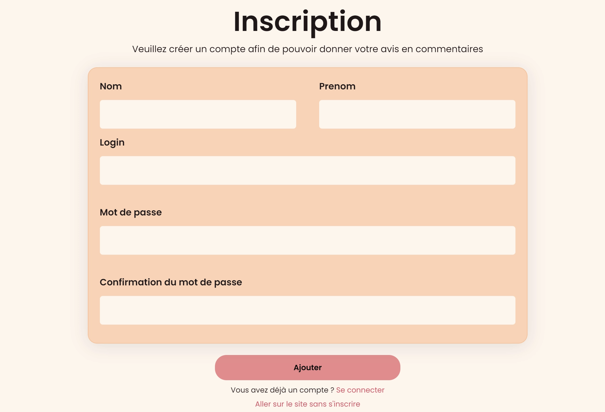
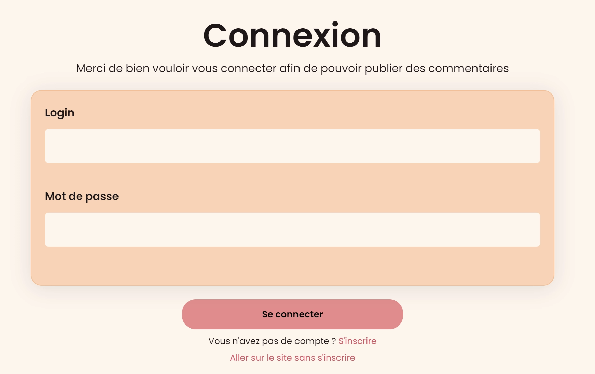
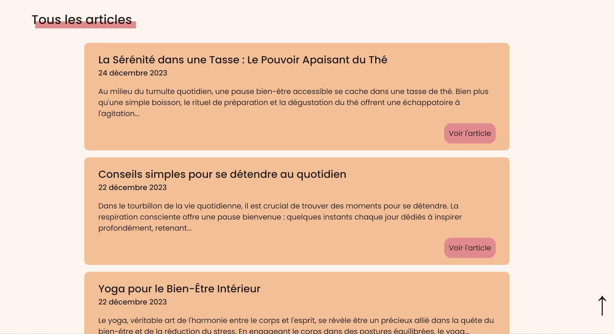
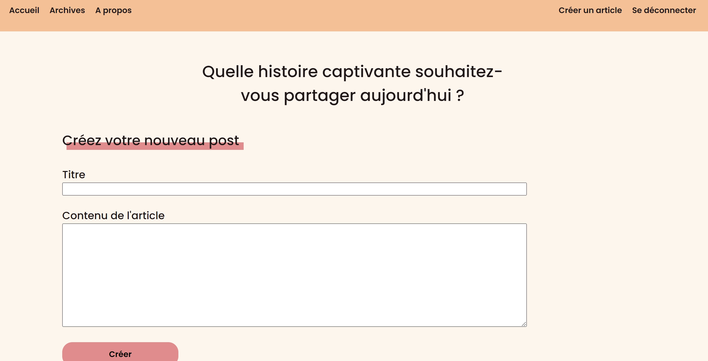
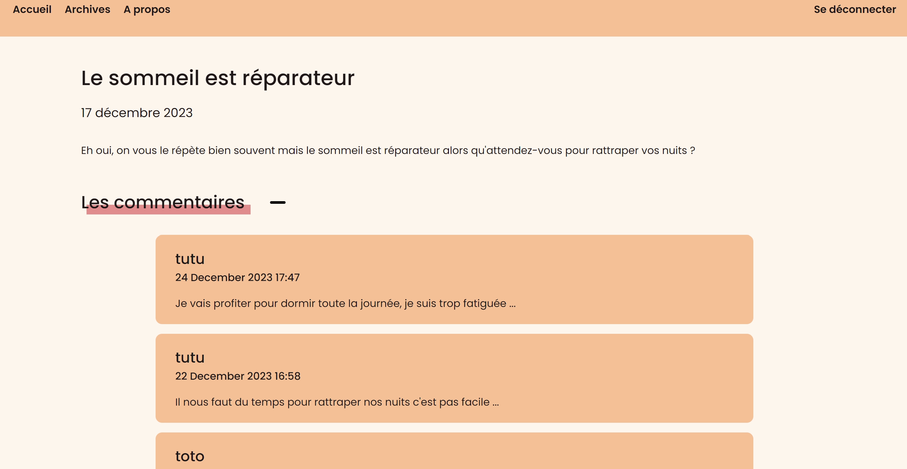
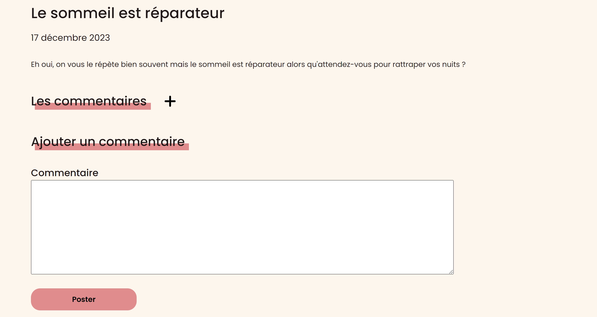

Miniblog
Présentation
Le miniblog est un projet scolaire axé sur le développement back. En effet, nous devions réaliser un miniblog dans lequel il y avait différents types d'utilisateurs (l'administrateur, les logués et non logués). Selon leur rôle, ils peuvent réaliser différentes actions (créer un article, ajouter un commentaire ou uniquement consulter le site). À travers ce blog, j'ai pu appliquer la notion de session. J'ai réalisé ce projet en MVC et cela m'a permis d'apprendre cette nouvelle architecture qui, je trouve, permet d'être mieux organisé et structuré.
Rôle
Développeur full-stack
Date
Novembre-Décembre 2023
Compétences
PHP
SQL
HTML
CSS






